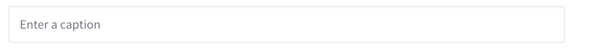

画像を追加する¶
画像ブロックを追加する¶
画像のブロックは、通常のブロックとは異なる方法で追加します。
追加する手順は次のとおりです。
エディタの空白部分をクリック
画像のURLを貼り付ける
これだけで画面上に表示されます。

画像ブロックには、キャプションを入力する欄も追加されます。画像の説明があればこちらに入力してください。

Note
画像はあらかじめインターネット上でアクセスできる場所にアップロードしてください。
画像の装飾表示¶
画像ブロックでは、画像の表示を装飾することができます。
装飾の種類は次のとおりです。
枠線付き表示
全幅表示
背景色付き表示
これらは組み合わせることもできます。
枠線付き表示¶
枠線付き表示は、メニューの一番左にあるアイコンをクリックします。
クリックしたアイコンの色が変わり、画像に枠線が付きます。
実際の表示は次のとおりです。
画像の周りにうっすらと線が表示されています。
全幅表示¶
全幅表示は、メニューの真ん中にあるアイコンをクリックします。

クリックしたアイコンの色が変わり、画像が画面幅いっぱいに表示されます。
実際の表示は次のとおりです。
画像が画面幅いっぱいに表示されました。
背景色付き表示¶
背景色付き表示は、メニューの一番右にあるアイコンをクリックします。
クリックしたアイコンの色が変わり、画像が少し小さく表示されて背景に色がつきます。

実際の表示は次のとおりです。

画像の背景に色がつきました。
Note
背景の色は固定です。指定はできません。